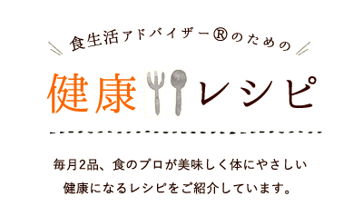
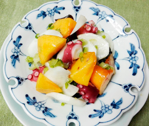

健康増進 健康経営 栄養管理 ダイエット 女性 食と生活に関する資格なら食生活アドバイザー®
- 願書のご請求期間
- 2021年9月24日(金)終了しました。
- 願書の発送時期
- 2021年9月24日(金)終了しました。
- 受験申込受付期間
- 2021年10月8日(金)終了しました。
- 受験票到着予定日
- 2021年11月18日(木)終了しました。
- 受験票未着問合せ期間
- 2021年11月22日(月)・24日(水)終了しました。
- 合否通知到着予定日
- 2021年12月24日(金)
- 合否通知未着問合せ期間
- 2022年1月11日(火)～12日(水)10:00～16:00

-

260kcal
-

170kcal
-

272kcal
-

258kcal
-

362kcal
-

591kcal
最終更新日
2021.12.2
- NEW2021.12.2
- 第46回 食生活アドバイザー検定試験
模範解答UP - NEW2021.12.2
- 第46回検定試験の合否通知は12月24日
到着予定です。 - 2021.11.28
- 食生活アドバイザー®のための健康レシピ
「温野菜のグリル黒酢あん」12月号 - 2021.11.28
- 食生活アドバイザー®のための健康レシピ
「甘鯛の西京みそ漬け焼き」12月号 - 2021.11.28
- 月刊コラム 食生活マメ知識12月号
- 2021.11.28
- 食アド®＆野スペ®
「月刊ニューステーブル」12月号